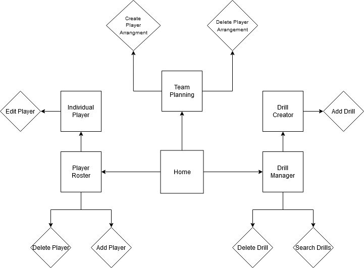
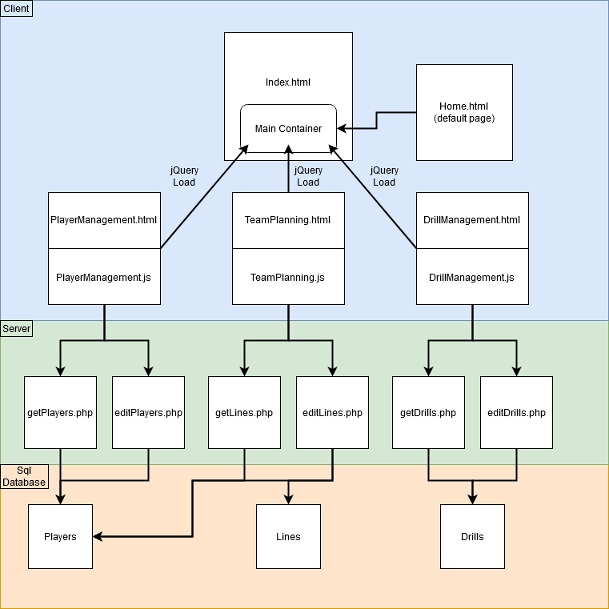

We are creating a sports / team management system that is used to keep track of roster, points, optimal team setups (lines), practice drills and other information related to running a team. It will allow a coach to create and store exercises along with player specific information to ensure the team can be run efficiently and improve itself. To begin it will focus solely on Hockey which is the most popular sport in Canada and fifth most popular in the United States.
1. System: It will be a multi tier web application using multiple tools, as listed in part 2, which allow for quick access to a database where the server retrieves player and drill info and returns it in a readable format to the user in the web browser. The team planning will involve loading player information and user input parameters into a php file which calculates the lineup of players that best meet the requirements and returns it in a readable table to the user. The website will be deployed in docker to ensure the server has all libraries available and compatible with the site requirements.
2. Tools: Xampp, Apache, mySQL, JQuery, AJAX, JavaScript, PHP, Composer, and Docker.
3. Views:

4. Architecture:

List of tasks/milestones/check points of your project with time schedule. For group project, it needs to provide the roles and tasks of each member.
| Task ID | Description | Due date | Lead |
|---|---|---|---|
| 1 | Project Research & Team up | Day 5 of week 9 | Ben |
| 2 | Project Proposal | Day 1 of week 10 | Ben |
| 3 | UI & Database Design Completed | Day 5 of week 10 | Ben |
| 4 | UI & Database Connections Completed | Day 5 of week 11 | Ben |
| 4 | Algorithms & Testing Completed | Day 4 of week 12 | Matt |
| 6 | Project Demonstration | Day 5 of week 12 | Matt |
| 7 | Docker Containerization Complete | Day 4 of week 13 | Matt |
| 8 | Project Submission | Day 5 of week 13 | Matt |